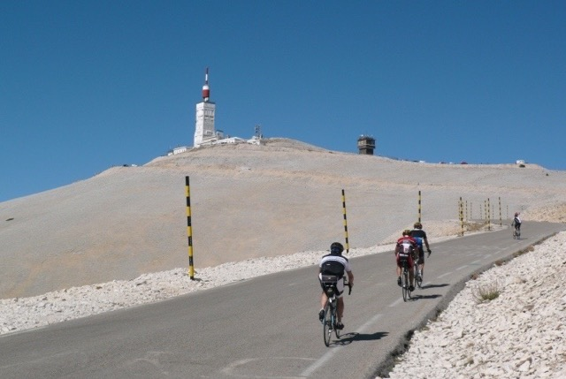
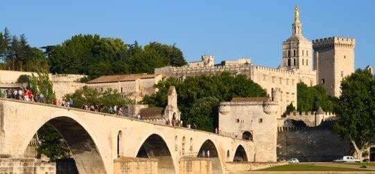

Ontdek de Provence
Gordes
Op de top van Gordes heeft u vanaf de dorpskerk en het kasteel uitzicht op de landbouw-vlakte en de heuvels van de Luberon. Gordes is vermeld als "een van de mooiste dorpen van Frankrijk".
Bezoek de website van Gordes>
L'isle sur la sorgue
Bekend als het Venetië van de Provence om de vele grachten en armen van de Sorgue rivier, die ontspringt uit de Fontaine de Vaucluse, een paar kilometer van de stad. Isle sur la Sorgue is verdeeld tussen toerisme, landbouw en de handel in antiek.
Fontaine de Vaucluse
De Fontaine de Vaucluse is het meest bezochte dorp van de Provence. De 'Vallis Clausa' dankt haar naam aan de mysterieuze bron van de Sorgue.
Bezoek de website van 'Gordes streek'>
Roussillon
Roussillon heeft zijn beroemdheid te danken aan de prachtige kliffen en de indrukwekkende groeven van oker, rood, geel en bruin in contrast van de groene dennenbossen en de blauwe lucht van de Provence.

Geniet van de natuur met de fiets of overwin de berg, Mont Ventoux
Mont Ventoux, Kale Berg, Hel van het Zuiden. De Mont Ventoux is misschien wel de meest legendarische berg om met de fiets te beklimmen. In ieder geval de meest beschreven berg. De top van de Mont Ventoux ligt op 1912 meter hoogte. Op de top van de berg bevindt zich een weerstation met een grote zendmast.

Bezoek Avignon, de Pausenstad
(1uur - 66km)
Ontdek de cultuurstad Avignon in de Provence
Als u via de brug over de Rhône naar Avignon rijdt, heeft u een grandioos uitzicht op de stad. U ziet de beroemde 'Pont d'Avignon' en het silhouet van het Pauselijk paleis dat uitrijst boven de indrukwekkende vestingsmuren van de oude stad de gerestaureerde gevels zullen u betoveren.
Bezoek de website van Avignon